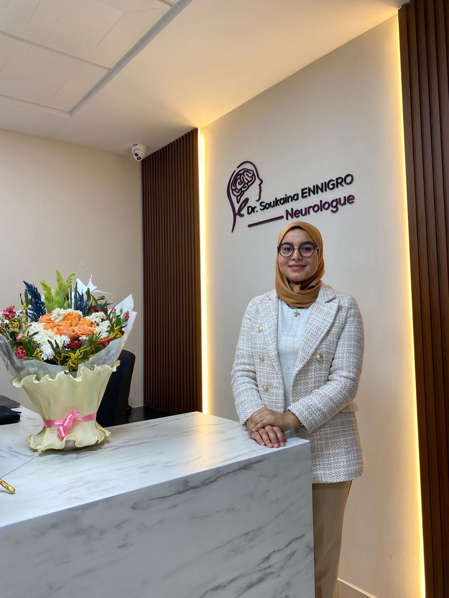

Accueil du cabinet
Bienvenue au cabinet du
Dr ENNIGRO Soukaina
Nous proposons une prise en charge neurologique complète, humaine et rigoureuse pour les adultes et les enfants. Le cabinet associe expertise clinique, accompagnement personnalisé et explorations neurophysiologiques modernes.
Neurologie adulte et enfant
EEG et ENMG sur place
Approche humaine et précise

Galerie du cabinet
Salle de consultation
Espace d'explorations
Services principaux
Consultations en neurologie
Évaluation, diagnostic et suivi des troubles neurologiques avec une approche adaptée à chaque patient.
EEG & ENMG
Réalisation d'explorations neurophysiologiques (électroencéphalogramme et électroneuromyogramme) pour un bilan précis et orienté.
À propos du Dr ENNIGRO Soukaina
Photo de la neurologue
(placeholder)
(placeholder)
Un parcours médical d'excellence
Le Dr ENNIGRO Soukaina est spécialiste en neurologie, formée à Casablanca. Après un internat à l'hôpital Ibn Rochd, elle a poursuivi sa spécialité en neurologie générale.
Elle a enrichi sa formation par un stage aux Hôpitaux Universitaires de Marseille - La Timone, ainsi qu'un diplôme sur les urgences AVC à la Faculté de Médecine et de Pharmacie de Fès.
Son expérience clinique, ses formations internationales et son engagement dans la recherche et l'encadrement font d'elle une praticienne rigoureuse, humaine et passionnée.
Pathologies prises en charge
- Accidents vasculaires cérébraux (AVC)
- Céphalées chroniques et migraine
- Épilepsie de l'adulte et de l'enfant
- Sclérose en plaques et maladies inflammatoires du système nerveux central
- Pathologies des nerfs et des muscles
- Maladie de Parkinson et tremblements
- Vertiges
- Démence et maladie d'Alzheimer
Explorations neurophysiologiques
Électroencéphalogramme (EEG)
L'EEG étudie l'activité électrique cérébrale. Cet examen est utile notamment dans l'évaluation de l'épilepsie, des troubles de la conscience et d'autres pathologies neurologiques.
Électroneuromyogramme (ENMG)
L'ENMG explore le fonctionnement des nerfs périphériques et des muscles. Il permet d'orienter le diagnostic des neuropathies, radiculopathies et atteintes neuromusculaires.
Témoignages patients
Kamal JOUAH
★★★★★ · il y a 3 semaines
Neurologue très compétente et humaine. Elle prend le temps d'étudier les dossiers et d'expliquer les choses de façon claire et rassurante.
ABDOU LAMAALEM
★★★★★ · il y a 2 mois
Merci pour la qualité du service et l'humanité du cabinet. Un accompagnement très sérieux dans une situation d'AVC ischémique.
Walid Laktib
★★★★★ · il y a 1 an
Neurologiste exceptionnelle, très à l'écoute. Elle explique avec patience et inspire confiance.
Touba GNING
★★★★★ · il y a 7 mois
Gentille, très professionnelle et à l'écoute de ses patients. Je recommande vivement son cabinet.
Hajar Tahiri
★★★★★ · il y a 1 an
Très humaine, compétente et à l'écoute. Le diagnostic est posé avec rigueur et bienveillance.
yassine chahbouni
★★★★☆ · il y a 1 an
Docteur à l'écoute, disponible, qui prend le temps nécessaire pour le diagnostic et les explications.
Contact
Coordonnées
- Adresse : Boulevard Abou Baker El Kadiri, Résidence Panorama, GH1, Immeuble 1, 2ème étage, Bureau N9
- Téléphone : 05 22 58 02 02 / 06 60 14 65 16
- Horaires :
Lundi - Vendredi : 09h00 - 17h00
Samedi : 09h00 - 13h00
Dimanche : Fermé
Formulaire de contact
Mentions légales & confidentialité
Mentions légales
Site vitrine du cabinet du Dr ENNIGRO Soukaina, neurologue à Casablanca.
Adresse : Boulevard Abou Baker El Kadiri, Résidence Panorama, GH1, Immeuble 1, 2ème étage, Bureau N9.
Téléphone : 05 22 58 02 02 / 06 60 14 65 16.
Politique de confidentialité
Les informations envoyées via le formulaire sont utilisées uniquement pour répondre à votre demande de contact.
Vous pouvez demander la rectification ou la suppression de vos données en contactant le cabinet par téléphone.